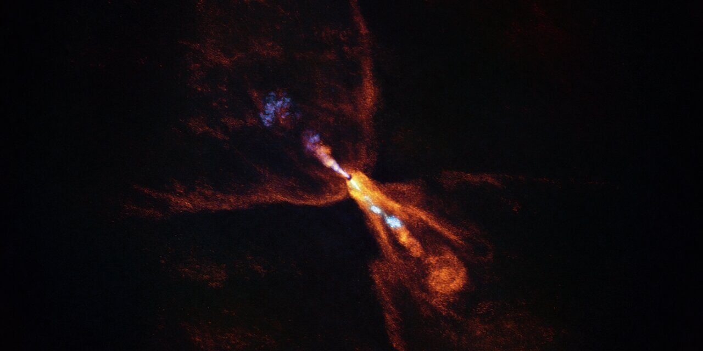

El universo puede parecer inabarcable: inmenso, complejo y lleno de términos técnicos. Bitácora Estelar
nace con el propósito de acercar la astronomía a todas las personas, sin importar su nivel de
conocimiento. Aquí encontraras explicaciones claras, precisas y accesibles que te permitirán explorar el
cosmos con confianza y curiosidad. Esta guía estápensda para acompañarte en cada paso del viaje por el
espacio, desde las nociones más básicas hasta los fenómenos más asombrosos.
Conceptos, Datos, Libros y más
Este espacio reúne una amplia variedad de recursos para enriquecer tu comprensión del universo. Desde
conceptos fundamentales hasta los datos más curiosos, pasando por recomendaciones literarias y
herramientas educativas, Bitácora estelar ofrece un abordaje integral de la astronomía. Ya sea que estes
comenzando a interesarte por este campo o busques profundizar tus conocimientos, aquí encontrarás
contenido confiable, ordenado y cuidadosamente seleccionado
Un rincón del cosmos
Bitácora Estelar es mas que un sitio web: es un espacio dedicado a quienes sienten fascinación por el
cielo. Un lugar donde la ciencia se presenta con claridad, pero también con sensibilidad. Aquí se invita
a observar reflexionar y aprender desde una perspectiva que valora tanto el conocimiento como la belleza
del universo. Este rincón esta diseñado para ofrecer una experiencia completa, combinando información
rigurosa con una mirada poética del cosmos.

Observando el inicio de la formación de nuevos planetas
Por primera vez, un grupo de investigadores ha logrado observar el momento en el que comienza la
formación de nuevos planetas en un sistema recién nacido. Para lograrlo, ha sido necesario
recurrir a la capacidad de observación de dos instalaciones muy diferentes: un observatorio
terrestre y uno espacial…
Las supernovas como pista sobre los cambios de la energía oscura
Un grupo de investigadores explica que el estudio de varias supernovas puede apuntar a posibles
cambios en la energía oscura con el paso del tiempo. Algo que se viene sospechando desde hace
tiempo y que, por fin, podría permitir descubrir la naturaleza de la energía oscura…
El origen común de las Pléyades, Híades y la nebulosa de Orión
Un nuevo estudio sugiere que la Nebulosa de Orión, las Pléyades y las Híades podrían compartir un
origen común. De hecho, el estudio explica que estos cúmulos representan diferentes fases de la
vida de un mismo sistema estelar. Los tres lugares parecen estar muy relacionados…